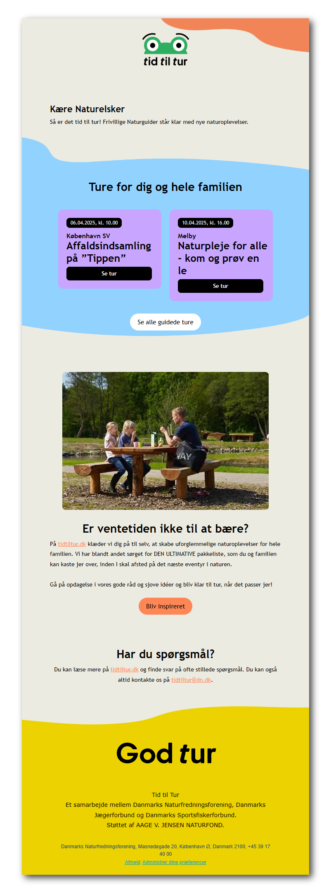

Certifikat
I forbindelse med naturguideuddannelserne skal deltagerne have et certifikat, når de har gennemført kurset. Her var det vigtigt at certifikatet kunne beholde Tid til Turs legende udtryk - samtidig med, at det virkede officielt.

Nyhedsbreve
Her har jeg arbejdet med at inkorporere de organiske farvede former fra Tid til Turs hjemmeside i hubspot email-skabeloner.
